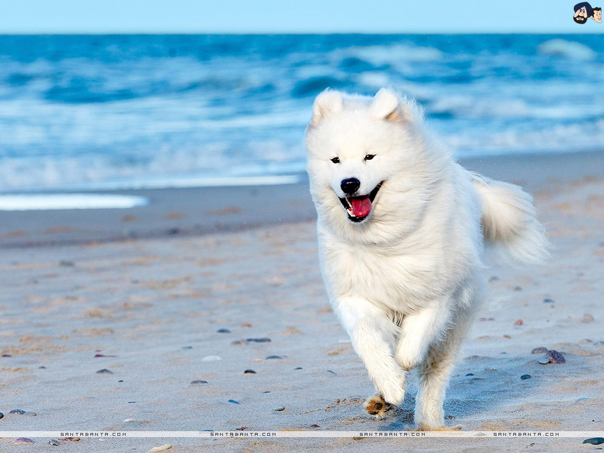
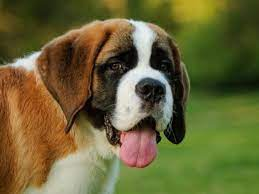
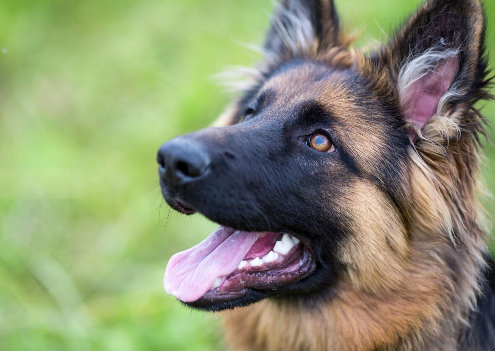
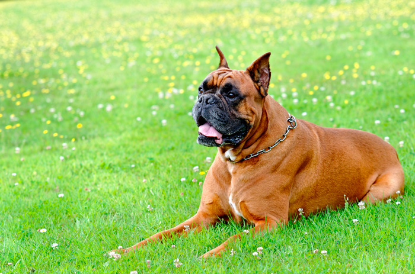
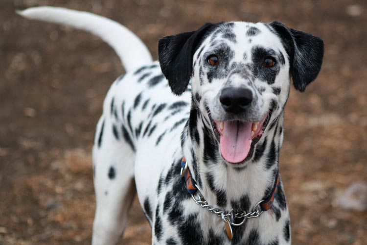
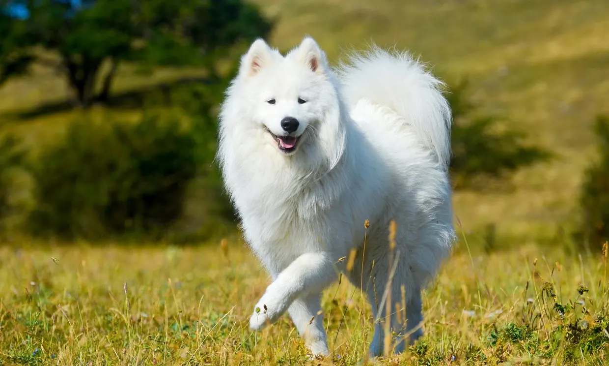
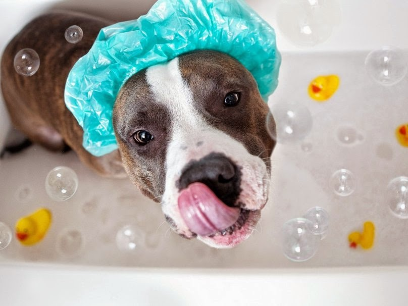
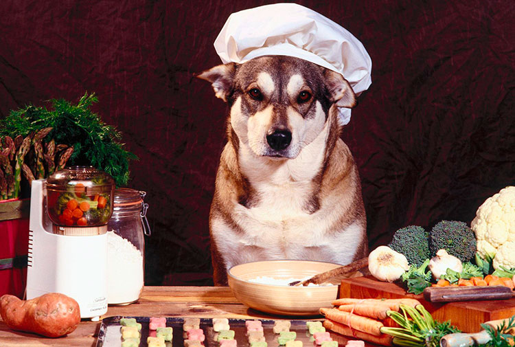
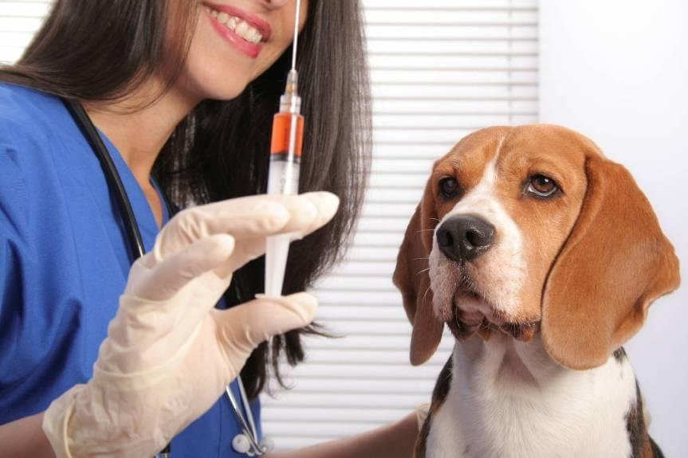

Los Perros
Ya desde la prehistoria se han documentado casos de asociación entre estos mamíferos descendientes del lobo y el ser humano. Cuando el hombre se dio cuenta de que podía ser un compañero de caza muy eficaz se creó una relación que ha evolucionado hasta la actualidad. Se cree que esta domesticación se produjo en Europa hace entre 20.000 y 40.000 años, a finales del Neolítico, dando lugar a la especie que hoy conocemos como Canis Lupus familiaris.

Pese a que todos los perros actuales tienen un antepasado común, hoy en día se conocen alrededor de 800 razas distintas con tamaños y fisonomías muy diferentes y originadas a partir de la selección artificial por parte de los seres humanos. A pesar de que no cuentan con un gran sentido de la vista, tienen muy buen oído y el sentido del olfato muy desarrollado, siendo esta la herramienta que define sus mejores cualidades como cazador o rastreador, pero también su capacidad de socialización reconociendo olores familiares. Las hembras pasan el celo dos veces al año, su periodo de gestación dura un poco más de dos meses y suelen tener camadas de entre 8 y 12 crías. A pesar de que su esperanza de vida está entre los 12 y los 15 años, hay algunos que pueden alcanzar los 20 años.
Razas de perros
Labrador Retriever
El labrador retriever es una raza canina originaria de Terranova, en la actual Canadá. Es una de las razas más populares del mundo por la cantidad de ejemplares registrados

San Bernardo
El san bernardo es una raza de perro originaria de los Alpes suizos y del norte de Italia. Es el perro boyero más famoso junto con el mastín del Pirineo y es muy próximo al gran boyero suizo.

Pastor Alemán
El pastor alemán u ovejero es una raza canina que proviene de Alemania. La raza es relativamente nueva, ya que su origen se remonta a 1899. Fueron perros desarrollados originalmente para reunir y vigilar ovejas.

Bóxer
El bóxer alemán o bóxer (en alemán: Deutscher Boxer) es una raza canina alemana de trabajo y compañía, tipo moloso, que tiende a un tamaño grande.

Dálmata
El dálmata es una raza canina que debe su nombre a la histórica región de Dalmacia. Su característica principal es su singular pelaje moteado de color negro, hígado o limón.

Samoyedo
Samoyedo es una raza de perro que toma su nombre de los pueblos samoyedos del norte de Rusia
Adoptar es un gran paso. Hay muchos aspectos que debes considerar previamente, desde elegir el tipo de mascota más adecuada para tu estilo de vida, hasta decidir dónde o con quién adoptar. Por eso queremos ayudarte para que ésta sea una de las mejores experiencias en tu vida y la de tu próximo amigo de cuatro patas.
Ante todo, debes tomar en cuenta la gran responsabilidad que representa tener a un animal de compañía dentro de tu vida, ya que desafortunadamente es común que algunos dueños que adquieren un cachorro o un gatito, de forma impulsiva decidan abandonarlo. Esto sucede por lo regular cuando se dan cuenta del compromiso a largo plazo que implica vivir con una mascota.
Incorporar un perro cachorro en adopción en tu vida es un hecho importante que va a modificar tu día a día durante muchos años, por lo es imprescindible que actúes con responsabilidad, y sospeses la idea teniendo muy en cuenta los pros y los contras. Piensa que, la mayoría de los perros que son abandonados y acogidos por refugios o protectoras de perros, son fruto de una decisión impulsiva y poco meditada por parte de sus propietarios, que ven alterada su vida cuando ya es demasiado tarde.
Los perros, a diferencia de los gatos, suelen ser mascotas extremadamente dependientes. Buscan el apego emocional constante, y requieren de la atención humana para desarrollar sus principales rutinas. Si tu nivel de implicación no se adecúa a sus necesidades, tu perro podrá sentirse triste y frustrado, llegando incluso a desarrollar actitudes depresivas. Cuando la decisión de adoptar un perro va asociada a la adquisición de un cachorro las consecuencias pueden ser aún peores, ya que deberás invertir grandes dosis de tiempo y paciencia durante sus primeros meses de vida.
Cuidados

Baños
El baño en general debe realizase cada dos o tres semanas, salvo en casos especiales y que lo indique su médico tratante.
Utiliza agua tibia, los manguerazos ya no están de moda.
El enjuague es muy importante, no escatimes el agua ya que con el doble pelaje de los perros, se dificulta el retiro del jabón.
El secado debe realizarse con toallas, el sol y en caso de utilizar secadora, que sea con aire tibio.

Alimentacion
Alimentarlo a la misma hora cada día ayuda a mantener su sistema digestivo funcionando regularmente y hace más predecibles sus necesidades fisiológicas. Este horario también ayuda a tu perro a saber cuándo esperar para hacer sus necesidades, así tendrá menos accidentes.

Vacunacion
Es muy importante platicar con tu veterinario sobre el protocolo de vacunación más adecuado para tu mascota. Los factores a considerar son la edad, la historia clínica, ambiente, los hábitos y estilo de vida.